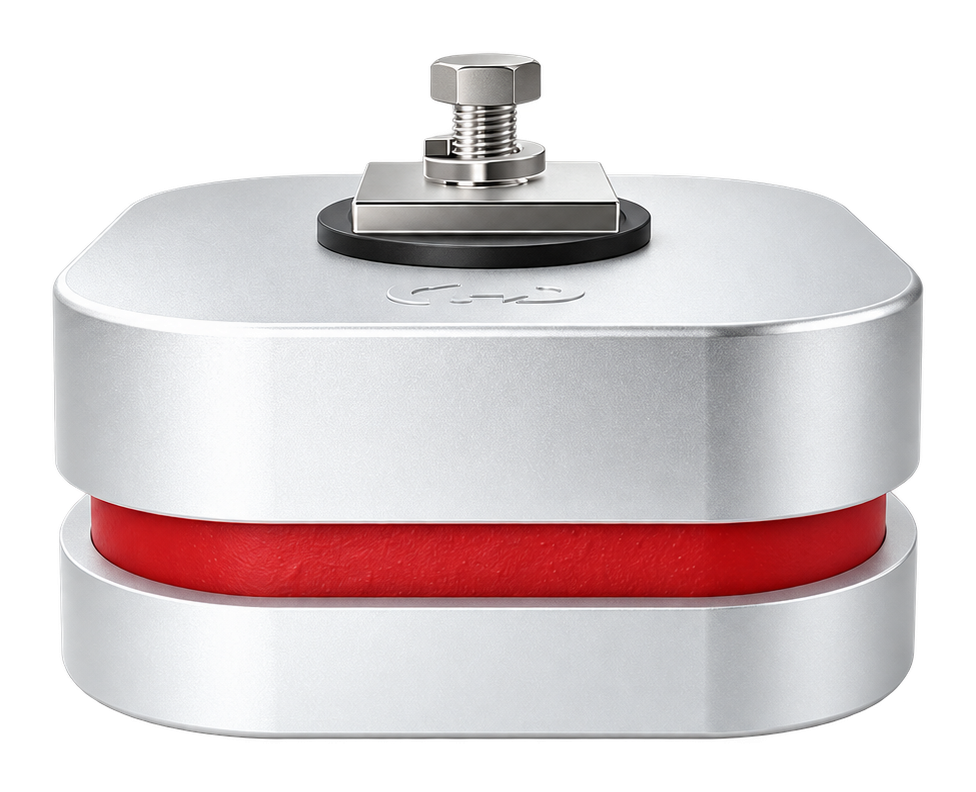
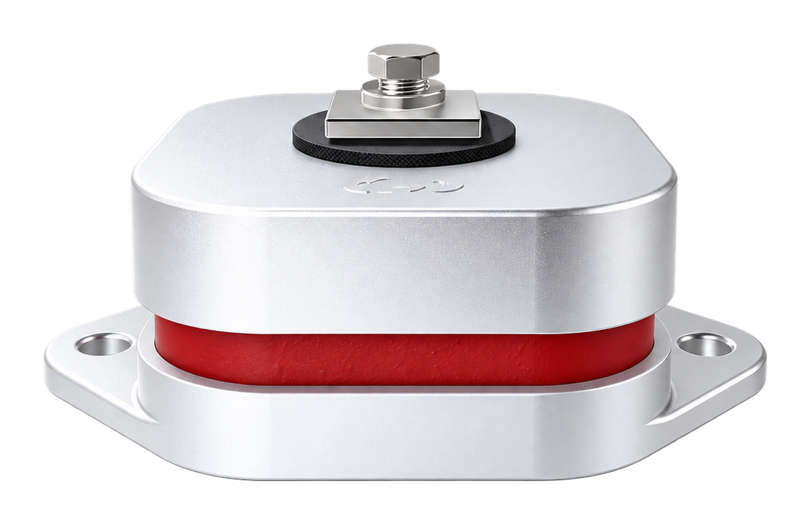
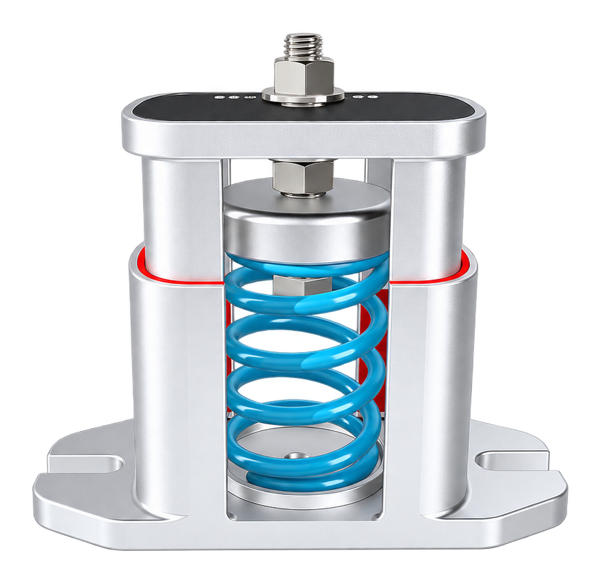
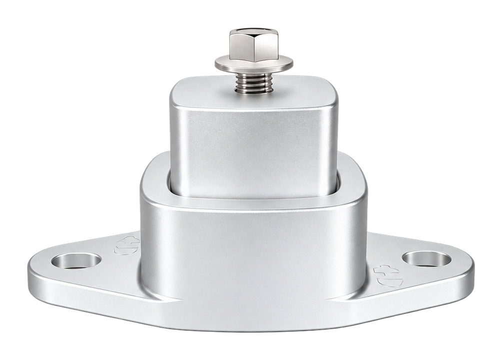
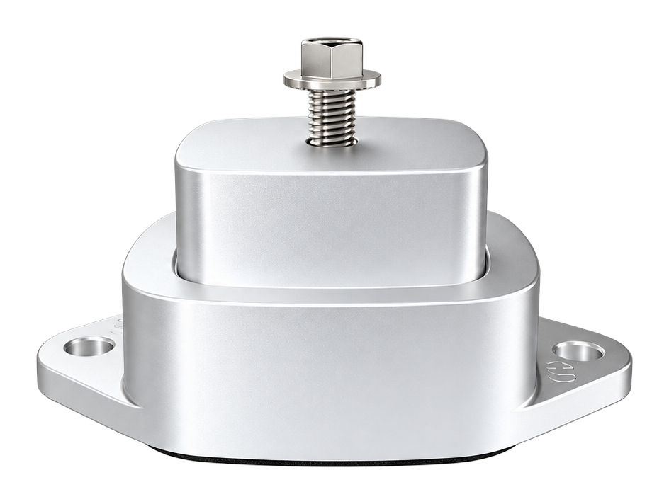
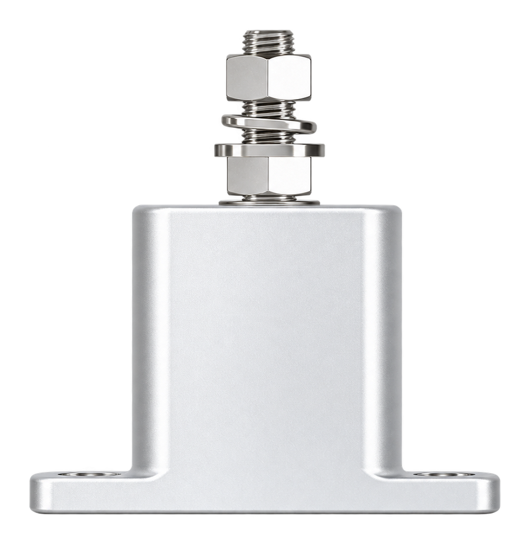

HANCHOU GEZHEN / PRODUCT PAGES
江苏翰畴隔震技术有限公司产品预览与选型

CATALOGUE P.5
CHC 型阻尼弹簧减震器
最佳载荷 110–1060 kg，最佳变形量 10 mm。高强度铝镁合金外壳，多组弹簧，设备重心更低，隔震效率更高。

CATALOGUE P.6
CHD 型阻尼弹簧减震器
最佳载荷 110–1060 kg，最佳变形量 10 mm。高强度铝镁合金外壳，多组弹簧，较长安装耳，设备重心更低，隔震效率更高。

CATALOGUE P.7
JZ 型可调弹簧减震器
最佳载荷 50–500 kg，最佳变形量 15 mm。大外径弹簧、橡胶隔震垫与铝合金外壳组成的复合型减震器。

CATALOGUE P.8
JTD 剪切型抗地震弹簧减震器
最佳载荷 50–250 kg，最佳变形量 15 mm。多曲线圆柱异型弹簧，适应低摆动频率，并控制侧向运动。

CATALOGUE P.9
JTE 剪切型抗地震弹簧减振器
最佳载荷 50–500 kg，最佳变形量 15 mm。多曲线圆柱型弹簧，适应低频，并控制侧向运动。

CATALOGUE P.10
JW 型弹簧减振器
样册第10页。8 种型号，最佳载荷 50–350 kg，最佳变形量 15 mm。全封闭铝镁合金外壳。

CATALOGUE P.11
JHD 型低频阻尼弹簧减振器
最佳载荷 200–650 kg，最佳变形量 20 mm。全封闭铝合金外壳，多曲线圆柱型弹簧，适应低频并控制侧向运动。
© 2026 江苏翰畴隔震技术有限公司 · 本预览页不含 Manus 标识，也不替代工程选型。